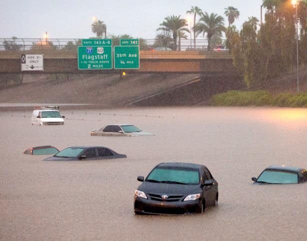
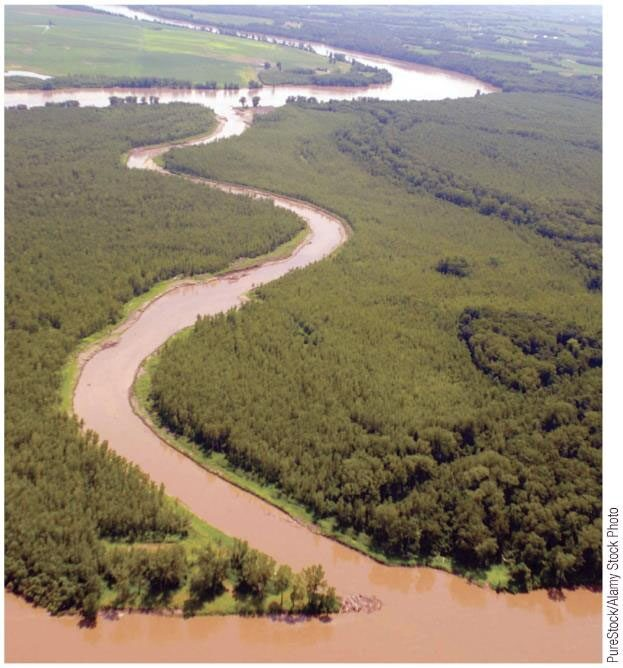
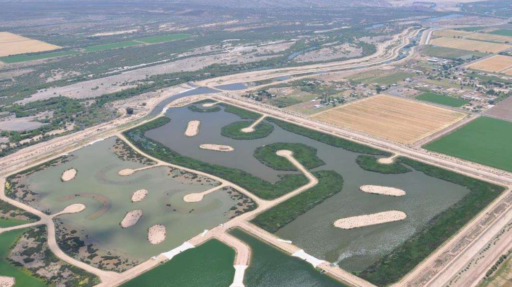

Class Exercise
One river, three systems. Map the people, the ecosystem and the concrete of the Los Angeles River.
Practice for your final video
Part 2 of your final video asks you to show how the social, ecological and technological parts of your issue connect. Today you do that with a real river. Tap each red icon.

Today is a trial run of Part 2
Your final video must show a systems diagram of the social, ecological and technological parts of your issue, point out at least one feedback loop, and explain it in a short summary.
The LA River gives you a worked case. You will build the same kind of diagram, with a team, in under 45 minutes.
The same shapes and labels
You will use rectangles, arrows marked + or −, diamonds, ovals and parallelograms. These are the same marks you can use for your own issue.
You will also practice finding a feedback loop and the trade-offs hidden inside a decision. Both belong in a strong video.
Explain it in two minutes
One teammate presents the poster in under 2 minutes. Your video gives about 4 minutes to show your slides and diagram, so a clear short explanation is a skill worth practicing now.
Keep your screenshot. It is a model for your own diagram.
Enter today's code
Your instructor shows a code on screen at the start of class. Checking in counts toward your participation grade.

Reimagining the Los Angeles River
This is the required video for the module (24 min 40 s). If you watched it already, skim the notes on the right.
Three systems, one river
Sustainability problems mix people, nature and technology. Name the three parts, then ask how they push on each other. Tap each red icon.
People, money, rules and fairness
This is everything about who lives, works and decides along the river: jobs, housing costs, parks, health, and who gets a say.
Ask: who benefits, and who might be left out or pushed out?
The river, its habitat and how it recovers
This is the living and natural side: water, plants, animals, soil and floods.
Ecological resilience means how well an ecosystem takes a hit, such as a flood or a drought, and bounces back. Ask: does the river system get more resilient, or less?
The built structures and the engineering
This is what people designed and built to manage the river, such as channels, walls and flood control works.
Ask: what was it built to do, and what else did it change for nature and for neighbors?
Four ideas to show on your poster
The five shapes on your poster
Use these shapes so anyone can read your system map. They are the same marks you can use in your final video diagram.
Answer six questions
Work with your sign-up group. Each system has two questions. Tap each red icon to read them, and put your answers on your poster.
Who gains, and who might lose?
1What are the key socio-economic benefits of the LA River restoration? Include at least one example from the video.
2Were there social equity or justice issues in the past, or are any expected in future restoration work? Include at least one specific example.
Hint: green gentrification is when a new park or restored river makes a neighborhood cost more for the people who already live there.
What does a healthier river do for nature?
3Use the idea of ecological resilience. What are the key benefits of the restoration?
4What ecosystem challenges could come up? Think about changes in hazards and risks, ecosystem services, and biogeochemical cycles.
Hint: think about flood risk, habitat, cooling, clean water, and where water, carbon and nutrients go.
What was built, and what did it change?
5What are the key technical or technological components that were part of the LA River system in the past?
6How did the engineering solutions used to manage the river affect the ecosystem and the communities?
Hint: every fix has a trade-off. Ask what the engineering solved, and what new problem it created.
Build the poster
Show how the three systems connect, with arrows that loop back. Tap each red icon for help. When you finish, tap the pencil to share what you found.
Use one shared board
Work on one board so everyone can edit at the same time. Pick one tool:
Zoom Whiteboard (preferred) · Canva · Miro · Google Slides · PowerPoint · InsightMaker
Choose one person to draw and let everyone else call out ideas.
Show the system, not just a list
Show all three systems (socio-economic, ecological, technical) and how they connect.
Make sure your poster shows boundaries, interconnectedness, feedback loops and emergence. Label every loop arrow with + or −.
Show the trade-offs of building the concrete channel and of the restoration proposal.
Your poster needs all of these
Under two minutes, then your screenshot
One team member presents the poster in under 2 minutes. Use your own words. Point to the loop and the trade-off.
Each team member takes a screenshot of the final poster and submits it individually through the link your instructor gives you. That is how you get credit.
What did your group find?
1Which tool did you use?
2Names of everyone in your group
3One feedback loop on your poster. Write it as a chain, with + or − on each arrow.
4The biggest trade-off you found, and who bears it
5Your group's key takeaway
Your poster is a rehearsal for your final video
Name the social, ecological and technical parts. Show how they connect, find a loop, and say who gains and who pays. Do the same for your own issue.